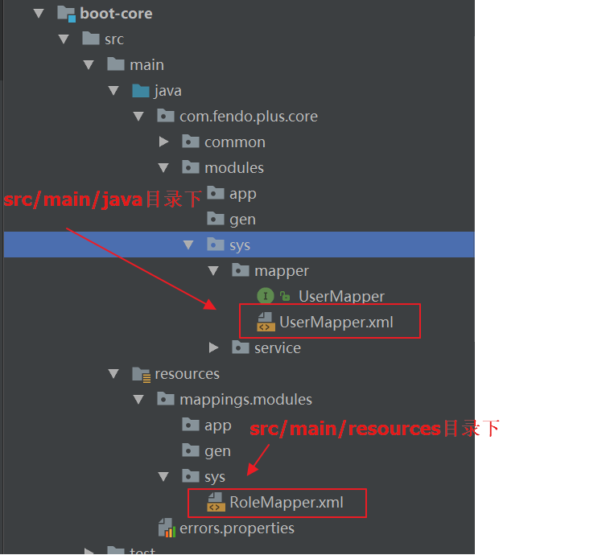
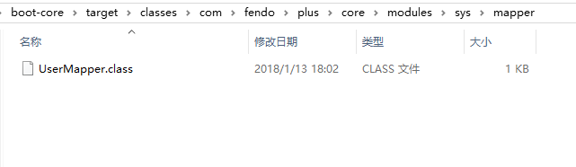
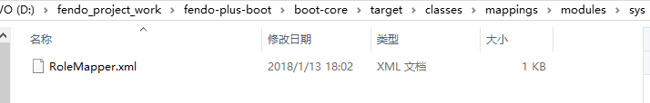
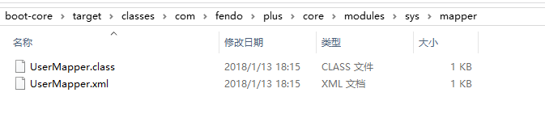
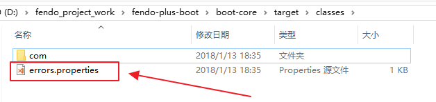
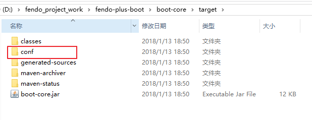

1 | # 删除 untracked files |
maven打包之resource配置
打包
一、简介
构建 Maven 项目的时候，如果没有进行特殊的配置，Maven 会按照标准的目录结构查找和处理各种类型文件。
src/main/java 和 src/test/java
这两个目录中的所有*.java 文件会分别在 comile 和 test-comiple 阶段被编译，编译结果分别放到了 target/classes 和 targe/test-classes 目录中，但是这两个目录中的其他文件都会被忽略掉。
src/main/resouces 和 src/test/resources
这两个目录中的文件也会分别被复制到 target/classes 和 target/test-classes 目录中。
target/classes
打包插件默认会把这个目录中的所有内容打入到 jar 包或者 war 包中。
如下所示:
二、Maven 项目的标准目录结构
- src
- main
- java 源文件
- resources 资源文件
- filters 资源过滤文件
- config 配置文件
- scripts 脚本文件
- webapp web 应用文件
- test
- java 测试源文件
- resources 测试资源文件
- filters 测试资源过滤文件
- it 集成测试
- assembly assembly descriptors
- site Site
- main
- target
- generated-sources
- classes
- generated-test-sources
- test-classes
- xxx.jar
- pom.xml
- LICENSE.txt
- NOTICE.txt
- README.txt
三、打包时资源文件的配置
3.1、打包 src/main/java 目录下的 xml
一般情况下，我们用到的资源文件(各种 xml，properites，xsd 文件等)都放在 src/main/resources 下面，利用 maven 打包时，maven 能把这些资源文件打包到相应的 jar 或者 war 里。
有时候，比如 mybatis 的 mapper.xml 文件，我们习惯把它和 Mapper.java 放一起，都在 src/main/java 下面，这样利用 maven 打包时，就需要修改 pom.xml 文件，来把 mapper.xml 文件一起打包进 jar 或者 war 里了，否则，这些文件不会被打包的。(maven 认为 src/main/java 只是 java 的源代码路径)
下面通过一个简单的示例来说明:
项目结构如下所示，有两个 UserMaper.xml 文件，所在目录不同

默认情况下，在 POM.XML 目录下执行: mvn clean package 打包命令在 target\classes 目录下不会把 UserMapper.xml 打包到下 mapper 目录下

而 resources 目录下的文件始终都会打包进 jar 包或 war 包

这个时候使用 mybatis 就会出一些问题，找不到 UserMapper 所对应的 xml 文件解决方法有如下几种:
(1)配置 POM.XML 的 resource 把 xml 也打包到 mapper 目录下
1 | <build> |
其中*/这样的写法，是为了保证各级子目录下的资源文件被打包。resources 是可以看做是容器，这个容器里面可以放很多个像 resource 这样的配置。而 directory 就是配置文件所在的路径，includes 从英文单词角度看，就是包含的意思，此时在执行命令，就会把 xml 也打包到 mapper 目录下了

Resources 官方文档地址为:http://maven.apache.org/pom.html#Resources
(2)maven-resources-plugin 插件
为了使项目结构更为清晰，Maven 区别对待 Java 代码文件和资源文件，maven-compiler-plugin 用来编译 Java 代码，maven-resources-plugin 则用来处理资源文件。
默认的主资源文件目录是 src/main/resources，很多用户会需要添加额外的资源文件目录，这个时候就可以通过配置 maven-resources-plugin 来实现。
1 | <!-- |
此外，资源文件过滤也是 Maven 的一大特性，你可以在资源文件中使用${propertyName}形式的 Maven 属性，然后配置 maven-resources-plugin 开启对资源文件的过滤，之后就可以针对不同环境通过命令行或者 Profile 传入属性的值，以实现更为灵活的构建。
1 | <plugin> |
(3)build-helper-maven-plugin 插件
1 | <!-- |
3.2、src/main/resources 目录下的 xml 等资源文件不被打包
默认 resources 目录下的文件都会被打包，如果想 resources 目录下的 xml 文件不被打包，可通过如下配置:
1 | <!--过滤resource下的文件--> |
编译之后如下:

当然也可以通过插件来实现
1 | <plugin> |
实现的效果如下:

编译好之后，会在 target 目录下生成 conf 目录并且把 resources 目录下的所有文件都自动拷贝到 target/conf/目录下
SpringBoot 项目中使用Log4j2详细
1. 介绍
1.1. 简介
1.1.1. 首先，认识一下三胞胎
- log4j 是 apache 实现的一个开源日志组件
- logback 同样是由 log4j 的作者设计完成的，拥有更好的特性，用来取代 log4j 的一个日志框架，是 slf4j 的原生实现
- Log4j2 是 log4j 1.x 和 logback 的改进版，据说采用了一些新技术（无锁异步、等等），使得日志的吞吐量、性能比 log4j 1.x 提高 10 倍，并解决了一些死锁的 bug，而且配置更加简单灵活
1.1.2. 然后，了解一下，使用 slf4j+log4j 和直接用 log4j 的区别
slf4j 是对所有日志框架制定的一种规范、标准、接口，并不是一个框架的具体的实现，因为接口并不能独立使用，需要和具体的日志框架实现配合使用（如 log4j、logback），使用接口的好处是当项目需要更换日志框架的时候，只需要更换 jar 和配置，不需要更改相关 java 代码
1 | import org.slf4j.Logger; |
log4j、logback、log4j2 都是一种日志具体实现框架，所以既可以单独使用也可以结合 slf4j 一起搭配使用
1 | import org.apache.logging.log4j.LogManager; |
1.2. 导入需要使用的 jar 包(slf4j+log4j2)
springboot 项目中需导入
1 | <dependency> |
绕坑：如项目中有导入 spring-boot-starter-web 依赖包记得去掉 spring 自带的日志依赖 spring-boot-starter-logging，如下：
1 | <dependency> |
1.3. 开始配置
springboot 方式：
application.properties 中添加配置 logging.config=classpath:log4j2_dev.xml， log4j2_dev.xml 是你创建的 log4j2 的配置文件名，放在 resources 下，如放在其他路径则对应修改
1.3.1. Web 工程方式
1 | <context-param> |
1.3.2. 纯 Java 方式
1 | public static void main(String[] args) throws IOException { |
配置文件的格式：log2j 配置文件可以是 xml 格式的，也可以是 json 格式的，
配置文件的位置：log4j2 默认会在 classpath 目录下寻找 log4j2.xml、log4j.json、log4j.jsn 等名称的文件，如果都没有找到，则会按默认配置输出，也就是输出到控制台，也可以对配置文件自定义位置（需要在 web.xml 中配置），一般放置在 src/main/resources 根目录下即可
贴上 log4j2_dev.properties 的配置再来讲解
1 |
|
log4j2.xml 文件的配置大致如下：
- Configuration
- properties
- Appenders
- Console
- PatternLayout
- File
- RollingRandomAccessFile
- Async
- Console
- Loggers
- Logger
- Root
- AppenderRef
Configuration：为根节点，有 status 和 monitorInterval 等多个属性
- status 的值有 “trace”, “debug”, “info”, “warn”, “error” and “fatal”，用于控制 log4j2 日志框架本身的日志级别，如果将 stratus 设置为较低的级别就会看到很多关于 log4j2 本身的日志，如加载 log4j2 配置文件的路径等信息
- monitorInterval，含义是每隔多少秒重新读取配置文件，可以不重启应用的情况下修改配置
Appenders：输出源，用于定义日志输出的地方
log4j2 支持的输出源有很多，有控制台 Console、文件 File、RollingRandomAccessFile、MongoDB、Flume 等- Console：控制台输出源是将日志打印到控制台上，开发的时候一般都会配置，以便调试
- File：文件输出源，用于将日志写入到指定的文件，需要配置输入到哪个位置（例如：D:/logs/mylog.log）
- RollingRandomAccessFile: 该输出源也是写入到文件，不同的是比 File 更加强大，可以指定当文件达到一定大小（如 20MB）时，另起一个文件继续写入日志，另起一个文件就涉及到新文件的名字命名规则，因此需要配置文件命名规则
这种方式更加实用，因为你不可能一直往一个文件中写，如果一直写，文件过大，打开就会卡死，也不便于查找日志。- fileName 指定当前日志文件的位置和文件名称
- filePattern 指定当发生 Rolling 时，文件的转移和重命名规则
- SizeBasedTriggeringPolicy 指定当文件体积大于 size 指定的值时，触发 Rolling
- DefaultRolloverStrategy 指定最多保存的文件个数
- TimeBasedTriggeringPolicy 这个配置需要和 filePattern 结合使用，注意 filePattern 中配置的文件重命名规则是${FILE_NAME}-%d{yyyy-MM-dd HH-mm}-%i，最小的时间粒度是 mm，即分钟
- TimeBasedTriggeringPolicy 指定的 size 是 1，结合起来就是每 1 分钟生成一个新文件。如果改成%d{yyyy-MM-dd HH}，最小粒度为小时，则每一个小时生成一个文件
- NoSql：MongoDb, 输出到 MongDb 数据库中
- Flume：输出到 Apache Flume（Flume 是 Cloudera 提供的一个高可用的，高可靠的，分布式的海量日志采集、聚合和传输的系统，Flume 支持在日志系统中定制各类数据发送方，用于收集数据；同时，Flume 提供对数据进行简单处理，并写到各种数据接受方（可定制）的能力。）
- Async：异步，需要通过 AppenderRef 来指定要对哪种输出源进行异步（一般用于配置 RollingRandomAccessFile）
PatternLayout：控制台或文件输出源（Console、File、RollingRandomAccessFile）都必须包含一个 PatternLayout 节点，用于指定输出文件的格式（如 日志输出的时间 文件 方法 行数 等格式），例如 pattern=”%d{HH:mm:ss.SSS} [%t] %-5level %logger{36} - %msg%n”
1
2
3
4
5
6
7
8
9
10
11%d{HH:mm:ss.SSS} 表示输出到毫秒的时间
%t 输出当前线程名称
%-5level 输出日志级别，-5表示左对齐并且固定输出5个字符，如果不足在右边补0
%logger 输出logger名称，因为Root Logger没有名称，所以没有输出
%msg 日志文本
%n 换行
其他常用的占位符有：
%F 输出所在的类文件名，如Log4j2Test.java
%L 输出行号
%M 输出所在方法名
%l 输出语句所在的行数, 包括类名、方法名、文件名、行数Loggers：日志器
日志器分根日志器 Root 和自定义日志器，当根据日志名字获取不到指定的日志器时就使用 Root 作为默认的日志器，自定义时需要指定每个 Logger 的名称 name（对于命名可以以包名作为日志的名字，不同的包配置不同的级别等），日志级别 level，相加性 additivity（是否继承下面配置的日志器）， 对于一般的日志器（如 Console、File、RollingRandomAccessFile）一般需要配置一个或多个输出源 AppenderRef；
每个 logger 可以指定一个 level（TRACE, DEBUG, INFO, WARN, ERROR, ALL or OFF），不指定时 level 默认为 ERROR
additivity 指定是否同时输出 log 到父类的 appender，缺省为 true。
1 | <Logger name="rollingRandomAccessFileLogger" level="trace" additivity="true"> |
- properties: 属性
使用来定义常量，以便在其他配置的时候引用，该配置是可选的，例如定义日志的存放位置
D:/logs
1.4. 验证日志内容
以下为练习写的 excel 数据存入数据库的 controller 层代码，其中加入 Log4j2
1 | import cn.tbj.service.ExcelService; |
SpringBoot去除内嵌tomcat
SpringBoot 内嵌 tomcat，直接 run Application 即可，那么我们如何去除内嵌的 tomcat，使用自己的呢？
一、POM(去除内嵌 tomcat 后，需要添加 servlet 依赖)
1 | <dependency> |
打包方式设置成 war
1 | <packaging>war</packaging> |
二、继承 SpringBootServletInitializer 重写 configure 方法
1 | package com.example.export; |
三、添加到 tomcat 容器、run 即可
解决mybatis不同包下面同名mapper bean名重复的问题
如果代码里用了 spring+mybatis 集成在不同的包目录下有同名 mapper
启动的时候就会报 bean 名重复
因为 mybatis 在注册 mapper 为 bean 的时候默认用了接口名首字母小写的方法
为了解决这个问题，有两个方法
1、修改同名 mapper（废话。。。）
2、修改 mybatis 生成 bean 名的方法（重点）
首先在创建 MapperScannerConfigurer 的时候指定 nameGenerator，有以下两种方法
xml 配置指定 nameGenerator
1 | <bean id="scannerConfigurer" class="org.mybatis.spring.mapper.MapperScannerConfigurer" depends-on="mapperConfig"> |
java 配置，在 mybatis javaConfig 类上加上
1 | (nameGenerator = MyNameGenerator.class) |
MyNameGenerator 如下
1 | package com; |
mac安装mysql
安装方式一：用 dmg 镜像安装
1、安装
下载地址：https://dev.mysql.com/downloads/mysql/

下载好 mysql MAC 版安装包，常规步骤安装，安装过程中会出现如下提示：
2018-04-22T08:07:19.044013Z 1 [Note] A temporary password is generated for root@localhost: TfrNnt9!k1xi
其中 TfrNnt9!k1xi 是初始密码，最好先记住！
2、登陆
但是在终端命令行 登陆 mysql
1 | mysql -u root -p |
提示：-bash: mysql: command not found
遇上-bash: mysql: command not found 的情况别着急，这个是因为/usr/local/bin 目录下缺失 mysql 导致，只需建立软链接，即可以解决：
把 mysql 安装目录，比如 MYSQLPATH/bin/mysql，映射到/usr/local/bin 目录下：
1 | cd /usr/local/bin |
接下来登陆就 OK 啦（完事！）
3、修改密码
在 MySQL8.0.4 以前，执行
1 | SET PASSWORD=PASSWORD('修改的密码'); |
即可修改密码。
如果 mysql 是 8.0 版本以上，这样默认是不行的。因为之前，MySQL 的密码认证插件是“mysql_native_password”，而现在使用的是“caching_sha2_password”。
因为当前有很多数据库工具和链接包都不支持“caching_sha2_password”，为了方便，我暂时还是改回了“mysql_native_password”认证插件。
在 MySQL 中执行命令：
1 | ALTER USER 'root'@'localhost' IDENTIFIED WITH mysql_native_password BY '新密码'; |
总结
其实镜像安装非常简单，只是在映射 mysql 指令的时候需要烧点脑子。
安装方式二：用 Homebrew 进行安装
最近发现 mac 上一个神奇工具 Homebrew(包缺失管理)，就像 maven 管理 jar 包的依赖一样，Homebrew 帮忙管理各种工具，真是太方便。Homebrew 的常用指令。
1 | # 安装mysql，版本x.y |
安装 5.7 版本
1 | feideMacBook-Air:~ fei$ brew install mysql@5.7 |
看看输出的提示，剩下的该怎么操作其实 brew 提示的很清楚了！！！
启动服务
1 | /usr/local/opt/mysql@5.7/bin/mysql.server start |
初始化
1 | # 对mysql进行初始化操作： |
1 | cometdeMacBook-Pro:~ comet |
OK！这样 brew 提示中的第一步就完成！接下来就可以尝试登陆了
1 | # 登陆mysql： |
异常
如果报ERROR 2002 (HY000): Can't connect to local MySQL server through socket '/tmp/mysql.sock' (2)这个错误，可能是服务没有启动。
Mac中的find命令
在 mac 上使用 find 查找某个文件夹下面的所有.md文件：
1 | find -name '*.md' |
在 mac 上报如下错误：
1 | find: illegal option -- n |
在 stackoverflow 上找到了答案(https://stackoverflow.com/questions/25840713/illegal-option-error-when-using-find-on-macos):
- mac 上使用的是
bsd，而 linux 上使用的是gnu。 - bsd 的 find 命令第一个参数必须指定目录路径，而 gnu 可以省略第一个参数
所以，上面的命令在 linux 执行完全没问题，而在 mac 下必须使用：
1 | find . -name '*.md' |
lombok @Accessors用法
.1. @Accessors
Accessor 的中文含义是存取器，@Accessors 用于配置 getter 和 setter 方法的生成结果，下面介绍三个属性
.1.1. fluent
fluent 的中文含义是流畅的，设置为 true，则 getter 和 setter 方法的方法名都是基础属性名，且 setter 方法返回当前对象。如下
1 |
|
.1.2. chain
chain 的中文含义是链式的，设置为 true，则 setter 方法返回当前对象。如下
1 |
|
.1.3. prefix
prefix 的中文含义是前缀，用于生成 getter 和 setter 方法的字段名会忽视指定前缀（遵守驼峰命名）。如下
1 |
|
官网文档 https://projectlombok.org/features/experimental/Accessors
Java中常见的对象类型简述(DO、BO、DTO、VO、AO、PO)
概念及理解
这些概念用于描述对象的类型；由于 java 是面向对象的语言；程序的世界就是各个对象之间的“交互”；在交互的工程中会存在多个层次，每个层次中所拥有（关注）的内容都是不一样的；
PO(Persistant Object) 持久对象
用于表示数据库中的一条记录映射成的 java 对象。PO 仅仅用于表示数据，没有任何数据操作。通常遵守 Java Bean 的规范，拥有 getter/setter 方法。可以理解是一个 PO 就是数据库中的一条记录；可以理解某个事务依赖的原始数据；好处是可以将一条记录最为一个对象处理，可以方便转化为其他对象
BO(Business Object) 业务对象
封装对象、复杂对象，里面可能包含多个类
主要作用是把业务逻辑封装为一个对象。这个对象可以包括一个或多个其它的对象。用于表示一个业务对象。BO 包括了业务逻辑，常常封装了对 DAO、RPC 等的调用，可以进行 PO 与 VO/DTO 之间的转换。BO 通常位于业务层，要区别于直接对外提供服务的服务层：BO 提供了基本业务单元的基本业务操作，在设计上属于被服务层业务流程调用的对象，一个业务流程可能需要调用多个 BO 来完成。
比如一个简历，有教育经历、工作经历、社会关系等等。
我们可以把教育经历对应一个 PO，工作经历对应一个 PO，社会关系对应一个 PO。
建立一个对应简历的 BO 对象处理简历，每个 BO 包含这些 PO。
这样处理业务逻辑时，我们就可以针对 BO 去处理。VO(Value Object) 表现对象
前端界面展示；value object 值对象；ViewObject 表现层对象；主要对应界面显示的数据对象。对于一个 WEB 页面，或者 SWT、SWING 的一个界面，用一个 VO 对象对应整个界面的值；对于 Android 而言即是 activity 或 view 中的数据元素。用于表示一个与前端进行交互的 java 对象。有的朋友也许有疑问，这里可不可以使用 PO 传递数据？实际上，这里的 VO 只包含前端需要展示的数据即可，对于前端不需要的数据，比如数据创建和修改的时间等字段，出于减少传输数据量大小和保护数据库结构不外泄的目的，不应该在 VO 中体现出来。通常遵守 Java Bean 的规范，拥有 getter/setter 方法。
DTO(Data Transfer Object) 数据传输对象
前端调用时传输；也可理解成“上层”调用时传输;
比如我们一张表有 100 个字段，那么对应的 PO 就有 100 个属性。但是我们界面上只要显示 10 个字段，客户端用 WEB service 来获取数据，没有必要把整个 PO 对象传递到客户端，这时我们就可以用只有这 10 个属性的 DTO 来传递结果到客户端，这样也不会暴露服务端表结构.到达客户端以后，如果用这个对象来对应界面显示，那此时它的身份就转为 VO.用于表示一个数据传输对象。DTO 通常用于不同服务或服务不同分层之间的数据传输。DTO 与 VO 概念相似，并且通常情况下字段也基本一致。但 DTO 与 VO 又有一些不同，这个不同主要是设计理念上的，比如 API 服务需要使用的 DTO 就可能与 VO 存在差异。通常遵守 Java Bean 的规范，拥有 getter/setter 方法
DAO(Data access object) 数据访问对象
这个大家最熟悉，和上面几个 O 区别最大，基本没有互相转化的可能性和必要.，主要用来封装对数据库的访问。通过它可以把 POJO 持久化为 PO，用 PO 组装出来 VO、DTO；用于表示一个数据访问对象。使用 DAO 访问数据库，包括插入、更新、删除、查询等操作，与 PO 一起使用。DAO 一般在持久层，完全封装数据库操作，对外暴露的方法使得上层应用不需要关注数据库相关的任何信息。
POJO(Plain ordinary java object) 简单 java 对象
一个 POJO 持久化以后就是 PO；直接用它传递、传递过程中就是 DTO；直接用来对应表示层就是 VO。
byte[]，File和InputStream的相互转换
File、FileInputStream 转换为 byte[]
1 | File file = new File("test.txt"); |
byte[]转换为 InputStream
1 | byte[] bytes = new byte[1024]; |
byte[]转换为 File
1 | File file = new File(""); |